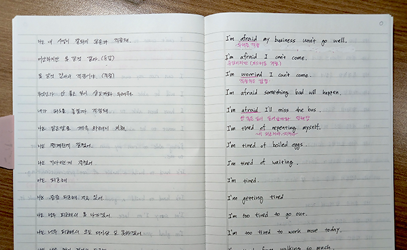

"내가 할 말은 내가 정한다 !"
사람마다 쓰는 말은 다릅니다.
같은 한국인이라도 고르는 단어, 자주 쓰는 표현, 절대 안 쓰는 표현이 다르고, 그 조합 전체가 바로 그 사람의 언어가 됩니다.
원어민이 입에 달고 사는 말이라도, 내가 쓰지 않는 말일 수 있습니다.
남들이 만들어준 나에게 맞지 않는 내가 거의 쓰지도 않을 영어문장들을 외우기 전에 내가 해야 할 말들을 먼저 생각해보세요.
내가 실제로 할 말들을 수집하세요. 어렵다면 AI의 도움을 받아도 좋습니다.
나만의 100문장, 500문장, 1000문장을 만들어서 완전히 내 것으로 만드세요.
어느 순간, 내가 할 말이 "툭" 튀어나오는 경험을 하게 됩니다.
계속 집어넣는게 아니고 반복적으로 자꾸 꺼내어야 합니다.
정보를 반복해서 읽는 것보다 기억에서 자주 꺼내 보는 과정이 장기 기억을 훨씬 강하게 만든다는 이론이 있습니다. 심리학에서는 이를 인출 연습(테스트 효과)이라고 부릅니다.
실제로 같은 내용을 여러 번 다시 읽은 사람보다, 읽은 뒤 떠올려 본 사람이 일주일 뒤 훨씬 많이 기억했다는 연구 결과가 있습니다.
방대한 양을 기억해야 하는 영어 공부에서 가장 눈여겨볼 내용입니다. 영어 말문을 여는 방법은 끝없이 집어넣는 것이 아니라, 반복해서 꺼내 보는 것입니다.
1. 나만의 문장을 모으세요
처음에는 내가 실제로 쓸 만한 1인칭 현재형 문장 위주로 수집하세요.
2. 바꿔 가며 꺼내 보세요
모은 문장을 인칭과 시제를 바꿔 가며 직접 말하고 써 보세요.
I drink coffee every morning.
She drinks coffee every morning.
I drank coffee this morning.
Do you drink coffee every morning?
문장을 보고 읽는 것이 아니라, 보지 않고 떠올려 말하는 것이 핵심입니다.
내가 수집한 문장을 툭탁에 추가하기

문장추가 메뉴의 폼에 직접입력하거나 메모장이나 엑셀에 입력한 파일을 업로드 할수도 있습니다. 갑자기 '이 문장은 영어로 어떻게 말하지?' 하고 생각이 날때 음성메모를 활용하세요.
하지만 가장 좋은 방법은 손으로 노트에 쓰기입니다.
노트를 펴서 왼쪽에 한글, 오른쪽에 영어를 쓰고 영어노트를 만드세요.
그리고 핸드폰의 카메라로 그 노트를 찍어서 핸드폰의 AI에게 텍스트로 변환해 달라고 해서 툭탁앱에 넣으세요.
데스크탑이 편하다면 웹페이지에서 PC 키보드로 빠르게 입력할수도 있습니다. (유료)
툭탁의 기능
카드학습
한국어를 보고 영어를 떠올려보고 확인하는 인출연습의 핵심 기능입니다.
음성을 듣고 그대로 따라 말해보면 기억이 더욱 강화됩니다.
수정, 삭제 기능으로 문장을 정밀하게 다듬고 정리하세요.
즐겨찾기, 미암기 표시로 내가 약한 문장만 골라서 학습하세요.
설정의 정렬 기능으로 랜덤 등으로 바꿔가며 연습해보면 암기력이 더욱 탄탄해져요.
노트형 학습
더보기 > 문장관리에서 노트형 학습을 할 수 있습니다.
손 안 대고 전체를 훑어보며 외우는 다른 형식의 암기장입니다.
자동재생이 지원되므로 순차적으로 빠르게 실력을 점검할 수 있습니다.
문장변형 (유료)
왕초보라면 1인칭 현재시제 중심으로 기본문장을 100개 정도 외우세요. 툭탁에서 제공하는 기본문장을 사용해도 좋지만, 내가 할 말을 고민해보고 내가 수집한 "개인어 100문장"을 사용하는 것을 추천드려요.
기본문장을 변형해서 시제와 인칭을 바꾸어 가며 자유자재로 말할 수 있게 연습하세요. 세상의 모든 문장을 알지 않아도 됩니다. 시제와 인칭을 변형해가며 말하다 보면 생각의 근육이 생겨서, 새로운 문장에도 자연스럽게 적용되어 말이 나옵니다.
무료로도 충분히, 원한다면 한 번 결제로 더 편하게
핵심 기능은 모두 무료로 제한 없이 이용할 수 있습니다.
유료 기능은 구독이 아니라 단 1회 결제로 평생 사용할 수 있습니다.
- 클라우드 백업/동기화로 소중한 문장을 안전하게 보관하고, 핸드폰과 PC 등 여러 기기에서 이어서 쓰기
- PC에서 키보드로 빠르고 편하게 입력하기
- 내 문장을 AI로 자동 변형(시제, 인칭 등)하기
자주 묻는 질문
Q. 꼭 로그인해야 하나요?
A. 아니요. 로그인 없이도 문장 입력부터 카드 학습까지 핵심 기능을 모두 사용할 수 있습니다. 로그인은 클라우드 백업 등 일부 기능을 쓸 때만 필요합니다.
Q. 유료 기능은 구독인가요?
A. 아니요. 한 번 결제하면 별도 갱신 없이 계속 이용할 수 있습니다.
Q. 인터넷 연결이 꼭 필요한가요?
A. 아니요. 문장 입력과 카드 학습은 인터넷 연결 없이도 계속 이용할 수 있습니다. 클라우드 백업이나 AI 자동변형처럼 일부 기능만 인터넷 연결이 필요합니다.
Q. 내가 입력한 문장은 어디에 저장되나요?
A. 모든 문장은 기본적으로 내 기기에만 저장됩니다. 클라우드 백업이나 AI 자동변형처럼 서버를 거치는 기능을 이용하지 않는 한, 문장은 내 기기 밖으로 나가지 않습니다.